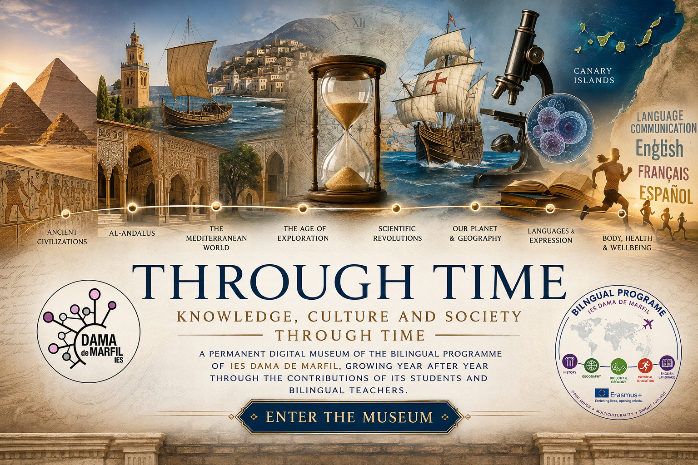

Knowledge, Culture and Society Through Time

Through Time is a bilingual interdisciplinary digital museum created by students and teachers of IES Dama de Marfil.
The project explores human development from Prehistory to the Contemporary World through History, Biology and Geology, Geography, English, French, Physical Education and Spanish Language and Literature.